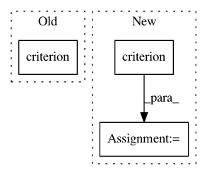

031392ff2cbb5703558d17a676a456521f754190,mnist/main.py,,train,#Any#,67
Before Change
optimizer.zero_grad()
batch_data.data[:] = training_data[i:i+BATCH_SIZE]
batch_targets.data[:] = training_labels[i:i+BATCH_SIZE]
loss = criterion(model(batch_data), batch_targets)
loss.backward()
loss = loss.data[0]
optimizer.step()
print("Epoch: {} [{}/{} ({:.0f}%)]\tLoss: {:.4f}".format(epoch,
After Change
batch_data.data[:] = training_data[start:end]
batch_targets.data[:] = training_labels[start:end]
output = model(batch_data)
loss = criterion(output, batch_targets)
loss.backward()
loss = loss.data[0]
optimizer.step()
print("Train Epoch: {} [{}/{} ({:.0f}%)]\tLoss: {:.4f}"
In pattern: SUPERPATTERN
Frequency: 3
Non-data size: 3
Instances
Project Name: OpenNMT/OpenNMT-py
Commit Name: 031392ff2cbb5703558d17a676a456521f754190
Time: 2016-12-15
Author: soumith@fb.com
File Name: mnist/main.py
Class Name:
Method Name: train
Project Name: catalyst-team/catalyst
Commit Name: 0152660a10414335b57a30cd99a6e3648df64491
Time: 2019-09-16
Author: tez.romach@gmail.com
File Name: catalyst/dl/callbacks/criterion.py
Class Name: CriterionCallback
Method Name: _compute_loss
Project Name: OpenNMT/OpenNMT-py
Commit Name: 77a6ec73c53c5cc62a2ae451694537144afa5644
Time: 2016-09-14
Author: alerer@fb.com
File Name: mnist/main.py
Class Name:
Method Name: test